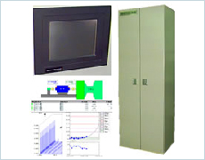

回転機器が異常をきたすと振動に顕著に表れます。その振動を監視し、故障に至までに解析・通報するシステムを、補機に使用している回転機器の特性及び運用に合わせてトータル的にエンジニアリングいたします。
補機振動監視装置は、発電所におけるポンプ・ファンを始めとする補機の振動値を常時監視して、それら回転機器の異常を検知し警報発信するとともに、振動信号からＦＦＴ解析し異常部位の診断、並びに蓄積データから傾向管理、経年劣化診断等保守点検の時期等をアドバイスする装置です。
補機の振動を常時監視していますので、リアルタイムに監視し異常発信することができるとともに、安定して長期のデータ保存ができ、傾向管理・劣化診断の精度向上が図れます。
大型補機に用いられる滑り軸受け、その他転がり軸受け、並びに押し込みファン循環水ポンプ等、発電所における設備に応じたセンサ選定・取付、警報値をサポートします。
ご相談は営業開発部 Tel. 06-6458-7936